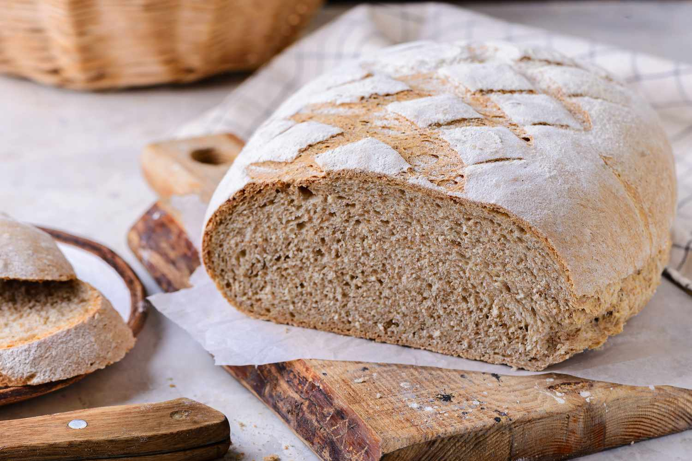

Whole-Wheat Bread
Go back

Description
Inspired on the Swiss Bauernbrot, farmer's bread, this easy, quick-to-make bread is moist, fulfilling,
tremendously nutritious and can be enjoyed at all times of the day, but it is best served warm at breakfast and/or dinner with
your favourite spreads.
Ingredients
- 350g whole wheat flour
- 100g strong flour
- 50g linseed flour
- 70g instant oatmeal
- 30g cocoa nib
- 20g flaxseed
- 21g fresh yeast
- 350ml tepid water
- 1 cup full fat Greek yogurt
- 1.5 tbsp extra virgin olive oil
- 1 tbsp salt
Steps
- Measure all ingredients
- In a bowl, pour the water and mix with the fresh yeast, using a spoon, until you have a homogenous liquid
- Pour all types of flour into the liquid, along with the oatmeal, cocoa nib and flaxseed
- Add the Greek yogurt, the extra virgin olive oil and the salt and mix with a spatula until a dough has formed
- Gently flour the surface and strongly knead the dough for about 10 minutes until smooth
- Let rest for at least an hour at room temperature
- Preheat the oven at 250°C
- Put the dough onto piece of parchment paper on an oven tray and sprinkle the top with water
- Bake for 35 minutes
- Remove from the oven and let rest for at least 20 minutes before serving